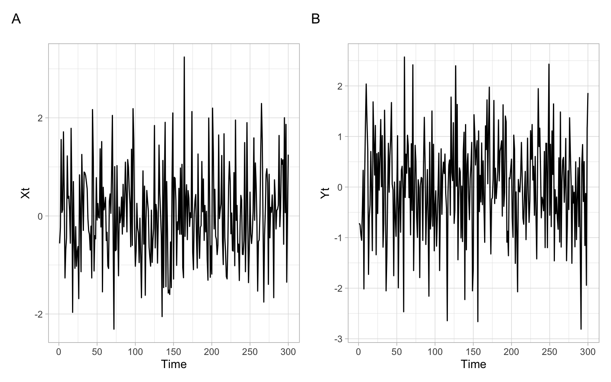
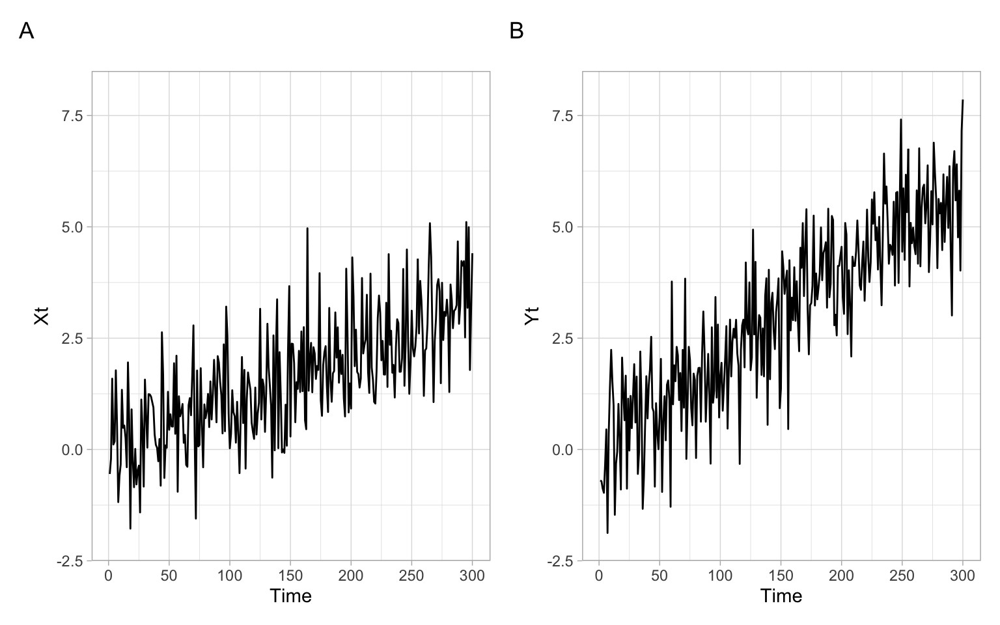
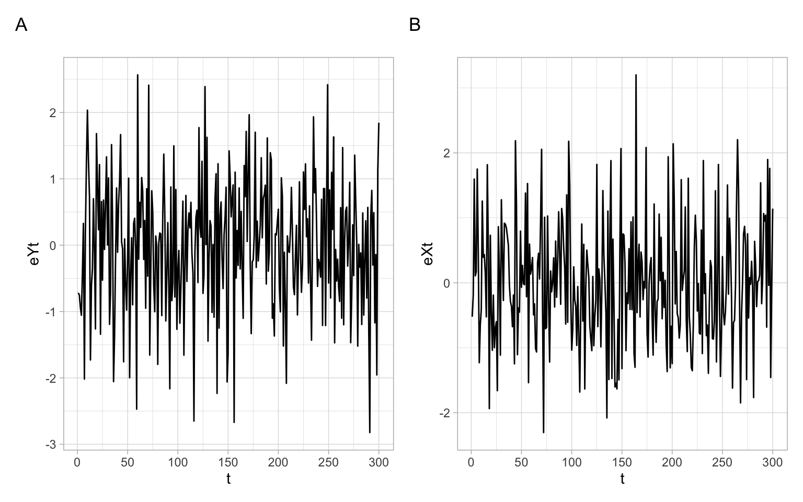
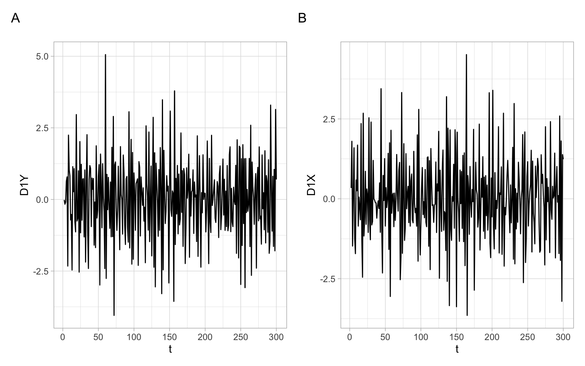

Code

The goal of this lecture is to introduce methods of handling nonstationary time series in regression models. You will become familiar with the problem of spurious correlation (regression) and approaches helping to avoid it.
Objectives
Reading materials
Results of statistical analysis (correlation, regression, etc.) are called spurious when they are likely driven not by the underlying mechanisms such as the physical relationships between variables, but by matching patterns (often, temporal patterns) of the variables leading to the statistical significance of tested relationships. Such matching patterns include trends, periodic fluctuations (seasonality), and more random patterns like spikes matching in several time series, for example, detected by searching over a large database of time series (a.k.a. cherry picking).

Figure 8.1 shows two series of length \(T = 300\) simulated from the standard normal distribution, \(N(0,1)\). These are independent and identically distributed (i.i.d.) random variables: each of the \(T\) values in \(X_t\) and \(Y_t\) was drawn independently from other values from the same distribution. Two random variables are independent if the realization of one does not affect the probability distribution of the other. Independence is a strong condition, it also implies (includes) that the values are not correlated. This is true both for the values within the series \(X_t\) and \(Y_t\), and across \(X_t\) and \(Y_t\) (i.e., \(X_t\) and \(Y_t\) are not autocorrelated, nor correlated with each other). This is the asymptotic property of such a time series (as the sample size increases infinitely).
In finite samples, we may observe that a point estimate of the correlation coefficient even for such an ideal series is not exactly zero, but it will be usually not statistically significant. See the results (confidence interval and \(p\)-value) from the correlation \(t\)-test below:
cor.test(Xt, Yt)#>
#> Pearson's product-moment correlation
#>
#> data: Xt and Yt
#> t = -1, df = 298, p-value = 0.3
#> alternative hypothesis: true correlation is not equal to 0
#> 95 percent confidence interval:
#> -0.1727 0.0529
#> sample estimates:
#> cor
#> -0.0607Not many time series behave like that in real life – often we observe some trends. Let’s add linear trends to our simulated data, for example, trends going in the same direction but with slopes of different magnitudes. Here we use linear increasing trends, i.e., with positive slopes Figure 8.2.
It is probably a good idea to refrain from writing ‘positive trends’ (or ‘negative trends’) because they can be confused with ‘good’ or ‘beneficial’ trends. For example, a decrease in the unemployment rate is a positive (good) trend for a country, but it is a trend with a negative slope. Contrary, a linear trend in pollutant concentrations with a positive slope (going upward) shows a negative (worsening) tendency for the ecosystem.

After adding trends to each of the time series, the correlation of \(X_t\) and \(Y_t\) is strong and statistically significant, but this is not necessarily because these series are so strongly related to each other.
cor.test(Xt, Yt)#>
#> Pearson's product-moment correlation
#>
#> data: Xt and Yt
#> t = 13, df = 298, p-value <2e-16
#> alternative hypothesis: true correlation is not equal to 0
#> 95 percent confidence interval:
#> 0.519 0.665
#> sample estimates:
#> cor
#> 0.597Some other factors may be driving the dynamics (trends) of \(X_t\) and \(Y_t\) in the same direction. Also, recall the general formula for computing correlation (or autocorrelation) of time series and that we need to subtract time-dependent means (not just a mean calculated over the whole period assuming the mean is not changing or time-independent), for example, as in ?eq-Cov.
For example, a city’s growing population may result in more police officers and heavier pollution at the same time, partially because more people will drive their vehicles in the city. An attempt to correlate (regress) pollution with the number of police officers will produce a so-called spurious correlation (regression). The results of statistical tests will be likely statistically significant. However, is pollution directly related to the number of police officers? Will the dismissal of a police officer help to make the air cleaner?
Not only common increasing/decreasing trends but also other systematic changes (such as seasonality) may be responsible for spurious correlation effects. For example, both high ice cream sales and harmful algal blooms typically occur in warm weather conditions and may be ‘significantly’ correlated, suggesting banning ice cream for the sake of a safer environment. See more interesting examples of spurious correlation at http://www.tylervigen.com/spurious-correlations.
Sometimes, some simple tricks may help to avoid spurious results. For example, analyze not the raw numbers, but the rates that remove the effect of population growth in a city: crime rate per 100,000 inhabitants, number of people older than 70 per 1,000 inhabitants, etc. For more general approaches, see the next section.
Consider a situation when we are given time series with trends (like in Figure 8.2), we do not know the data generating process (DGP; i.e., the true dependence structure), and we want to use these series in regression analysis.
In general, there are three alternative ways of dealing with trends in regression:
After these three approaches, here we consider a special case of cointegration (Section 8.3).
Based on the time series plots (Figure 8.2), a linear time trend would fit these data, since we see a linear increase of values with time (so we add a linear time effect \(t\) in our model). Alternatively, e.g., if we observed parabolic structure, we could include \(t+t^2\) or another form of trend.
#>
#> Call:
#> lm(formula = Yt ~ Xt + t)
#>
#> Residuals:
#> Min 1Q Median 3Q Max
#> -2.7564 -0.6069 0.0546 0.6404 2.5802
#>
#> Coefficients:
#> Estimate Std. Error t value Pr(>|t|)
#> (Intercept) 0.000813 0.114665 0.01 0.99
#> Xt -0.063741 0.060617 -1.05 0.29
#> t 0.020741 0.000939 22.09 <2e-16 ***
#> ---
#> Signif. codes: 0 '***' 0.001 '**' 0.01 '*' 0.05 '.' 0.1 ' ' 1
#>
#> Residual standard error: 0.99 on 297 degrees of freedom
#> Multiple R-squared: 0.756, Adjusted R-squared: 0.755
#> F-statistic: 461 on 2 and 297 DF, p-value: <2e-16This model looks like this: \[ Y_t = \beta_0 + \beta_1X_t + \beta_2t + \epsilon_t, \] estimated as: \[\begin{align} \widehat{Y}_t &= \hat{\beta}_0 + \hat{\beta}_1X_t + \hat{\beta}_2t,\\ \widehat{Y}_t &= 0.0008 - 0.0637X_t + 0.0207t. \end{align}\]
In the above model, the (highly statistically significant) time term took over the trend influence, thus, the coefficient for \(X\) shows the ‘real’ relationship between \(Y\) and \(X\). Notice, the coefficient \(\beta_1\) is not statistically significant, what we expected.
Here we fit a separate time trend (may be of a different form for each time series: linear, quadratic, log, etc.) for each variable and find deviations from these trends. Based on Figure 8.2, linear trends are appropriate here: \[ Y_t = a_0 + a_1t + e_{(Y)t}; \quad X_t = b_0 + b_1t + e_{(X)t}, \] where \(e_{(Y)t}\) and \(e_{(X)t}\) are the trend residuals for the series \(Y_t\) and \(X_t\), respectively.
After the trend coefficients \(a_0\), \(a_1\), \(b_0\), and \(b_1\) are estimated,
the smoothed series are \[ \widetilde{Y}_t = \hat{a}_0 + \hat{a}_1t; \quad \widetilde{X}_t = \hat{b}_0 + \hat{b}_1t \] and the estimated trend residuals are (Figure 8.3) \[ \hat{e}_{(Y)t} = Y_t - \widetilde{Y}_t\quad\text{and}\quad \hat{e}_{(X)t} = X_t - \widetilde{X}_t. \]

Use the residuals in our regression model in place of the original variables: \[ \hat{e}_{(Y)t} = \beta_0 + \beta_1\hat{e}_{(X)t} + \epsilon_t. \]
#>
#> Call:
#> lm(formula = MY$residuals ~ MX$residuals)
#>
#> Residuals:
#> Min 1Q Median 3Q Max
#> -2.7564 -0.6069 0.0546 0.6404 2.5802
#>
#> Coefficients:
#> Estimate Std. Error t value Pr(>|t|)
#> (Intercept) 1.05e-17 5.71e-02 0.00 1.00
#> MX$residuals -6.37e-02 6.05e-02 -1.05 0.29
#>
#> Residual standard error: 0.989 on 298 degrees of freedom
#> Multiple R-squared: 0.00371, Adjusted R-squared: 0.000366
#> F-statistic: 1.11 on 1 and 298 DF, p-value: 0.293We got the result (the relationship between the variables is not statistically significant) similar to running the model incorporating time trends in Section 8.2.1. Again, it is a reasonable result based on how the time series were simulated (independent, although with trends in the same direction).
Instead of assuming a deterministic trend as in the previous subsections, we can try to eliminate a stochastic trend by differencing the time series. We define the lag-1 difference operator \(\Delta\) by \[ \Delta X_t = X_t - X_{t-1} = (1-B)X_t, \] where \(B\) is the backward shift operator, \(BX_t = X_{t-1}\).
There are tests developed in econometrics to find the appropriate order of differences (unit-root tests). Here, however, we will use the rule of thumb: for time trends looking linear (our case, see Figure 8.2) use the first-order differences, for parabolic shapes – the second-order differences. After differencing, the series should look stationary.
The first-order differences for our series (Figure 8.4) can be calculated as follows:

The series of first-order differences look stationary (Figure 8.4). Use these differenced series instead of the original time series in a regression model: \[ \Delta Y_t = \beta_0 + \beta_1 \Delta X_t + \epsilon_t. \]
#>
#> Call:
#> lm(formula = D1Y ~ D1X)
#>
#> Residuals:
#> Min 1Q Median 3Q Max
#> -4.056 -1.050 0.178 1.005 5.028
#>
#> Coefficients:
#> Estimate Std. Error t value Pr(>|t|)
#> (Intercept) 0.0284 0.0840 0.34 0.74
#> D1X 0.0114 0.0620 0.18 0.85
#>
#> Residual standard error: 1.45 on 297 degrees of freedom
#> Multiple R-squared: 0.000114, Adjusted R-squared: -0.00325
#> F-statistic: 0.0338 on 1 and 297 DF, p-value: 0.854As expected (since the original series \(X_t\) and \(Y_t\), before adding the trend, were uncorrelated), the coefficient \(\beta_1\) and the whole regression model are not statistically significant.
What if we forget about the three approaches above and just use the time series with trends in a regression model? This could be such a model: \[ Y_t = \beta_0 + \beta_1X_t + \epsilon_t. \]
#>
#> Call:
#> lm(formula = Yt ~ Xt)
#>
#> Residuals:
#> Min 1Q Median 3Q Max
#> -4.022 -1.020 0.098 1.219 4.091
#>
#> Coefficients:
#> Estimate Std. Error t value Pr(>|t|)
#> (Intercept) 1.5812 0.1454 10.9 <2e-16 ***
#> Xt 0.8883 0.0692 12.8 <2e-16 ***
#> ---
#> Signif. codes: 0 '***' 0.001 '**' 0.01 '*' 0.05 '.' 0.1 ' ' 1
#>
#> Residual standard error: 1.61 on 298 degrees of freedom
#> Multiple R-squared: 0.356, Adjusted R-squared: 0.354
#> F-statistic: 165 on 1 and 298 DF, p-value: <2e-16The bad model shows spurious statistically significant effects, which are not true.
Beware of trends!
Generally, cointegration might be characterized by two or more I(1) variables indicating a common long-run development, i.e., the variables do not drift away from each other except for transitory fluctuations. This defines a statistical equilibrium that, in empirical analysis, can often be interpreted as a long-run [economic] relation (Engle and Granger 1987).
In other words, two I(1) series \(X_t\) and \(Y_t\) are cointegrated if their linear combination \(u_t\) is I(0): \[ Y_t - \beta X_t = u_t. \tag{8.3}\]
Cointegration means a common stochastic trend (see Appendix C on testing for a common parametric trend). The vector \((1, -\beta)^{\top}\) is called the cointegration vector.
For the development of methods of analyzing time series cointegration, in 2003, Clive W. J. Granger was awarded 1/2 of the Sveriges Riksbank Prize in Economic Sciences in Memory of Alfred Nobel (the other half was awarded to R. Engle, see ?sec-GARCH).
OLS estimator is super consistent, convergence \(T\). However, OLS can be biased in small samples.
The representation in Equation 8.4 has the advantage that it only contains stationary variables, although the underlying relation is between nonstationary (I(1)) variables. Thus, if the variables are cointegrated and the cointegration vector is known, the traditional statistical procedures can be applied for estimation and testing.
In the example above, the time series were simulated as cointegrated. Below is an example of another I(1) process \(W_t\) but with a stochastic trend different from that of \(X_t\). In this case, the linear combination of individually integrated \(W_t\) and \(X_t\) does not produce a stationary time series, thus, \(W_t\) and \(X_t\) are not cointegrated.
The Johansen test allows for more than one cointegrating relationship. The null hypothesis for the trace test is that the number of cointegration vectors is \(r<k\), vs. the alternative that \(r=k\). The testing proceeds sequentially for \(k=1,2,\dots\); and the first non-rejection of the null hypothesis is taken as an estimate of \(r\).
Using the R package urca:
#>
#> ######################
#> # Johansen-Procedure #
#> ######################
#>
#> Test type: maximal eigenvalue statistic (lambda max) , with linear trend
#>
#> Eigenvalues (lambda):
#> [1] 0.270915 0.025774 0.000838
#>
#> Values of teststatistic and critical values of test:
#>
#> test 10pct 5pct 1pct
#> r <= 2 | 0.21 6.5 8.18 11.7
#> r <= 1 | 6.48 12.9 14.90 19.2
#> r = 0 | 78.36 18.9 21.07 25.8
#>
#> Eigenvectors, normalised to first column:
#> (These are the cointegration relations)
#>
#> Yt.l2 Xt.l2 Wt.l2
#> Yt.l2 1.00000 1.000 1.0
#> Xt.l2 -0.49209 -5.234 -26.2
#> Wt.l2 -0.00497 0.383 -19.3
#>
#> Weights W:
#> (This is the loading matrix)
#>
#> Yt.l2 Xt.l2 Wt.l2
#> Yt.d -0.686 0.00228 2.64e-06
#> Xt.d -0.179 0.00796 -1.54e-05
#> Wt.d 0.180 0.00253 1.59e-04If two time series are cointegrated, then the usual regression in Equation 8.5 is the so-called long-run equilibrium relation or attractor, i.e., the relationship between \(X_t\) and \(Y_t\) can be explained by Equation 8.5 in a long run. Equation 8.5 is applied for estimation, not for testing (see Figure 6.1 in Kirchgässner and Wolters 2007 on highly dispersed \(t\)-statistic). The error correction model in Equation 8.4 should be estimated for testing (\(p\)-values from the ECM can be used for testing, also see Chapter 6 in Kirchgässner and Wolters 2007).
Now we can incorporate trend effects into our models, using the three considered approaches or by testing for cointegration and applying an error correction model. The next step would be to incorporate autocorrelation structure in the residuals (the simulated example considered here used independent normally distributed noise, so it was an artificial ideal case of no autocorrelation, whereas we usually encounter autocorrelations, e.g., see residual diagnostics in the examples in Section 8.2.1).